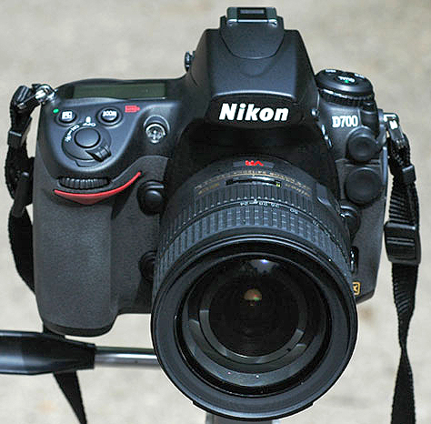
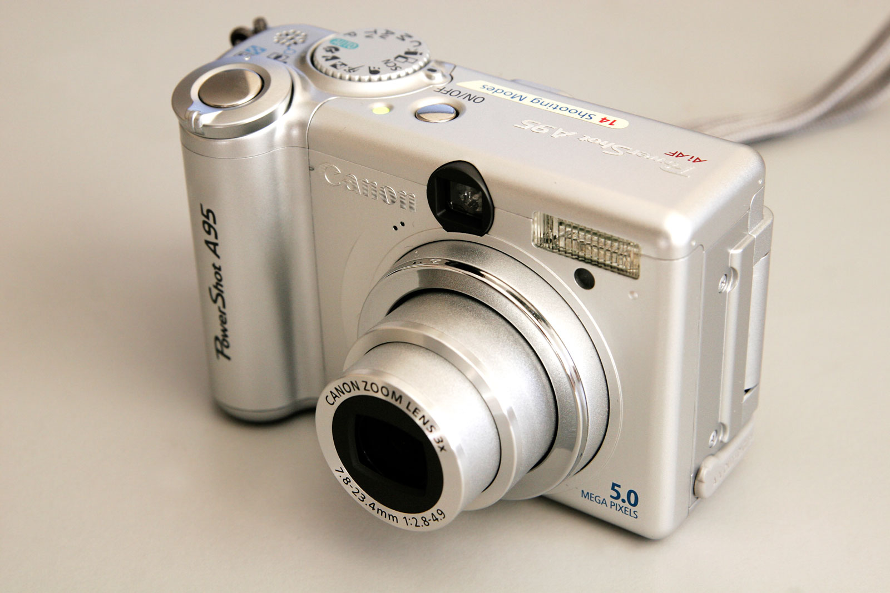
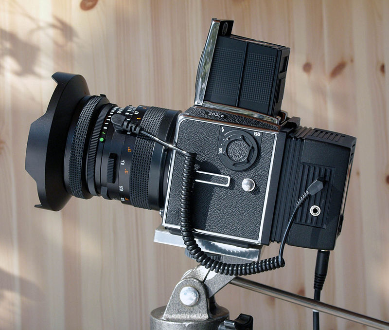

Digital photography
General
Digital photography is a form of photography that uses cameras containing arrays of electronic photodetectors to capture images focused by a lens, as opposed to an exposure on photographic film. The captured images are digitized and stored as a computer file ready for further digital processing, viewing, digital publishing or printing.
Until the advent of such technology, photographs were made by exposing light sensitive photographic film and paper, which were processed in liquid chemical solutions to develop and stabilize the image. Digital photographs are typically created solely by computer-based photoelectric and mechanical techniques, without wet bath chemical processing.
Digital photography is one of several forms of "digital imaging. Digital images are also created by non-photographic equipment such as computer tomography scanners and radio telescopes. Digital images can also be made by scanning other printed photographic images or negatives.
The first consumer digital cameras were marketed in the late 1990s. Professionals gravitated to digital slowly, and were won over when their professional work required using digital files to fulfill the demands of employers and/or clients, for faster turn-around than conventional methods would allow.[citation needed] Starting around 2007, digital cameras were incorporated in cellphones and in the following years cellphone cameras became widespread, particularly due to their connectivity to social media websites and email. Since 2010, the digital point-and-shoot and DSLR formats have also seen competition from the mirrorless digital camera format, which typically provides better image quality than the point-and-shoot or cellphone formats but comes in a smaller size and shape than the typical DSLR. Many mirrorless cameras accept interchangeable lenses and have advanced features through an electronic viewfinder, which replaces the through-the-lens finder image of the SLR format.


